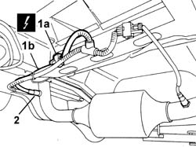

1080B95 REAR LAMBDA PROBE WITH CATALITIC CONVERTER R R
- Path
- Procedures > 10 ENGINE > 1080 EXHAUST EMISSION CONTROL SYSTEM > 1080B EXHAUST EMISSION CONTROL SYSTEM > 1080B95 REAR LAMBDA PROBE WITH CATALITIC CONVERTER R R
- Kind
- repair procedure (removal / refitting; the operation number is the code)
- Applies to
- engines: 2.0 16v; all production periods
- Interactive page
- https://sloeber94.github.io/elrnDB-fUlss/en/#/179007107
Applies to: engines: 2.0 16v; all production periods
 Removing
Removing
 Refitting
RefittingPosition the vehicle on a lift.
Op. 5530B56 BATTERY DRIP TRAY COVER - R.R.
Disconnect the negative battery terminal.
Raise the vehicle.
1. Disconnect the electrical connection for the rear Lambda sensor.
2. Undo the Lambda sensor and remove it.

Applies to: engines: 2.0 16v; all production periods
Refitting
RemovingFit the lambda sensor and tighten to the specified torque in its seat.
Value daNm | Fastening | Component | Ø | |
|---|---|---|---|---|
- | 4.7 ± 0.7 | Connector | Lambda sensor | - |
Connect the electrical connection for the Lambda sensor.
Lower the vehicle.
Connect the negative battery terminal.
Op. 5530B56 BATTERY DRIP TRAY COVER - R.R.
Remove the vehicle from the lift.